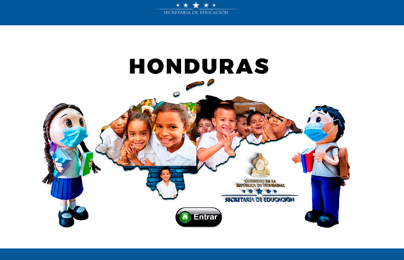

HISTORIA.
PAISAJES.
EDUACION.
POLITICA.
Sistema educativo de Honduras
El sistema educativo de Honduras es una función esencial del estado de Honduras para la conservación, el fomento y difusión de la cultura, la cual deberá proyectar sus beneficios a la sociedad sin discriminación de ninguna naturaleza. La educación nacional será laica y se fundamentará en los principios esenciales de la Democracia, inculcará y fomentará en los educandos profundos sentimientos hondureñistas y deberá vincularse directamente con el proceso de desarrollo económico y social del país.4 Es un derecho que es reconocido en la Constitución de Honduras de 1982, emitido mediante Decreto No. 131 de la Asamblea Nacional Constituyente y publicado en el Diario oficial La Gaceta (Honduras).5 En la mencionada Carta Magna6 se establecen las bases de cómo debe implementarse la educación en la nación. El Estado tiene la obligación de desarrollar la educación básica del pueblo, creando al efecto los organismos administrativos y técnicos necesarios dependientes directamente de la Secretaría de Estado en el Despacho de Educación Pública.7 La erradicación del analfabetismo es tarea primordial del Estado. Es deber de todos los hondureños cooperar para el logro de este fin8 El Estado reconoce y protege la libertad de investigación, de aprendizaje y de cátedra.9
Historia de la educación en Honduras
Aun siendo las nuevas tierras reclamadas por la corona española, los reyes enviarón aparte de adelantados, frailes misioneros con el fin de cristianizar tanto a los nativos como a los nacidos en la América colonial. En la Provincia de Comayagua Honduras, en el año de 1731 se fundó el primer centro de educación Colegio Tridentino de Comayagua o Colegio de San Agustín en la Villa de Santa María de la Nueva Valladolid de Comayagua, por Fray Obispo Antonio López Portillo de Guadalupe, unos años más tarde en 1779 fue fundada la primera escuela en la Villa de san Miguel de Heredia de Tegucigalpa, pero no hasta 1817 cuando el Ayuntamiento intenta la creación de una Escuela de Primeras Letras para la formación de estudiantes.
Educación laica
El artículo 24 de la Constitución Política emitida en 1880, se establece "El Estado tiene el primordial deber de fomentar y proteger la instrucción pública en sus diversos ramos: La instrucción primaria es obligatoria laica y gratuita. Será también laica la instrucción media u superior. Ningún ministro de una sociedad religiosa podrá dirigir establecimientos de enseñanza sostenidos por el Estado. Es así que el estado se hace cargo de la Educación pública, la cual constitucionalmente recalca que debe ser laica, gratuita y por ende obligatoria, para todos los habitantes; a cuyo caso de administrarla en 1889 se creó el Ministerio de Educación Pública adscrito al Poder Ejecutivo y con sede en la ciudad capital de Tegucigalpa, M.D.C. y con despachos en cada uno de los dieciocho departamentos de Honduras.
Previamente con la reforma educativa de 1957 del presidente Doctor Ramón Villeda Morales, se creó un nuevo sistema educacional y construcción de nuevos centros escolares y más tarde el 14 de noviembre de 1966 se emitió una Ley Orgánica de Educación, mediante Decreto No. 79 del Congreso Nacional de Honduras, la cual estuvo en vigencia hasta el 22 de febrero de 2012, con la implementación de la nueva ley fundamental de educación. Cabe mencionar que al emitirse dicha ley Honduras estaba administrada por una Junta Militar de Gobierno.
Niveles de la educación en Honduras
La educación en Honduras está dividida según las necesidades de aprendizaje y las edades de los estudiantes en los siguientes niveles: Pre-básica, Básica, Media y Superior.10 En el año 2000 los censos de estudiantes realizados por la Secretaría de Educación Pública reflejaban los datos siguientes: El Nivel de Educación Preescolar contaba con 120,141 alumnos, el Nivel de Educación Primaria contaba con 1.108,387 alumnos y el Nivel de Educación Medio contaba con 310,053 alumnos.11
Educación prebásica
La educación prebásica es gratuita y obligatoria, tiene como finalidad favorecer el crecimiento y desarrollo integral de las capacidades físicas y motoras, socio-afectivas, lingüísticas y cognitivas en los niños, para su adaptación total en el contexto escolar y comunitario. La cobertura de este nivel corresponde a educandos entre las edades de referencia de cuatro (4), cinco (5) y seis (6) años. Para ingresar a la educación básica se requiere, donde existen condiciones de cobertura, haber cursado al menos un (1) año de educación prebásica. 12
Educación básica
La educación básica es el nivel educativo que se orienta hacia la formación integral de los educandos en sus dimensiones física, afectiva, cognitiva, social, cultural, moral y espiritual, desarrollando sus capacidades de acuerdo a los conocimientos, habilidades y actitudes definidos en el currículo prescrito para este nivel, los cuales permiten continuar el proceso educativo formal. La educación básica es gratuita y obligatoria. Consta de nueve (9) años, con edades de referencia desde los seis (6) a los catorce (14) años y se divide en tres (3) ciclos secuenciales y continuos de tres (3) años cada uno. Además de la evaluación anual, cada ciclo será evaluado como un todo. 13
Primer ciclo
- Primer grado
- Segundo grado
- Tercer grado
Segundo ciclo
- Cuarto grado
- Quinto grado
- Sexto grado
Tercer ciclo
- Séptimo grado
- Octavo grado
- Noveno grado
Carreras profesionales
- Bachillerato Profesional en Ciencias y Humanidades
- Bachillerato Profesional en Salud y Nutrición
- Bachillerato Profesional en Promoción Social
- Bachillerato Profesional en Administración de Empresas
- Bachillerato Profesional en Informática
Carreras técnicas
- Bachillerato Técnico Profesional en Informática
- Bachillerato Técnico Profesional en Electrónica
- Bachillerato Técnico Profesional en Refrigeración
- Bachillerato Técnico Profesional en Agropecuaria
Carreras especiales
- Bachillerato Técnico Profesional en Informática Orientado a Robótica
- Bachillerato Técnico Profesional de Secretariado Ejecutivo Bilingüe
- Bachillerato Técnico Profesional en Banca y Finanzas